Se encuentra en la región de la torre de las colinas, al sur de la torre. Para poder entrar tendrás que superar una Prueba heroica (Los dos aros). Para activar la prueba habla con Nyel al norte del Puente de Jadel.
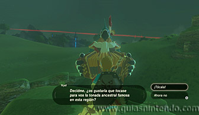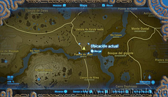
Una vez que está activada ve a las estructuras de piedra cercanas situadas al noroeste de ahí. Verás que estas estructuras tienen un agujero en el centro. La prueba consiste en disparar una flecha que pase por el centro de dos de estas piedras. Sitúate en la estructura que está más al noroeste.
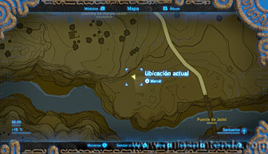
Desde ahí podrás disparar en línea recta a otra estructura cercana (debes apuntar más arriba por el arco que describe la flecha hacia abajo). En cuanto lo logres se completará la prueba y aparecerá la entrada del santuario.
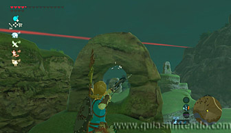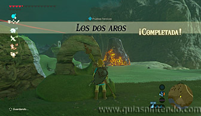
Una vez dentro del santuario, pisa el interruptor de la izquierda y espera a que una esfera caiga y entre en un agujero.
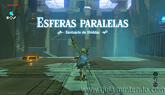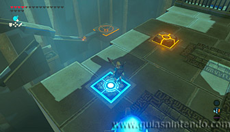
Después pisa el de la derecha, pero en cuanto la esfera pase de tramo, sal corriendo al interruptor de la izquierda.
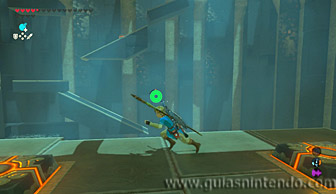
Del mismo modo, en cuanto la esfera caiga, corre para pisar de nuevo el de la derecha. Ahora mantente ahí encima hasta que la esfera caiga en el agujero de la izquierda.
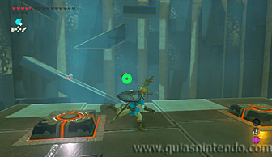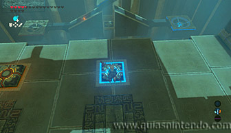
Así se abrirá la puerta para ir al altar. Si fallas al dirigir la esfera tendrás que volver a repetir el mismo proceso correctamente.
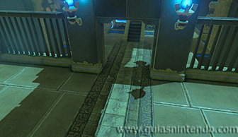
Antes de irte puedes saltar y planear a una plataforma que hay entre los dos agujeros. Allí encuentras el cofre que contiene un mandoble del rayo y otro interruptor. Este último activará la plataforma que te lleva de regreso al altar.
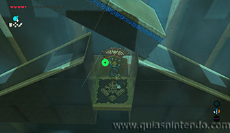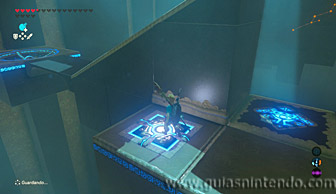
Una vez arriba avanza hasta el altar para conseguir el símbolo de valía.
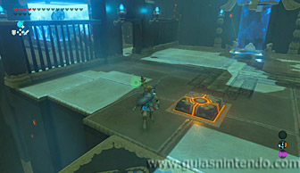